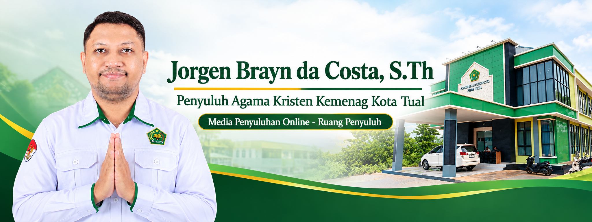

Memahami Kerukunan Umat Beragama
Memahami pentingnya toleransi, dialog antariman, dan kerja sama dalam menjaga kehidupan masyarakat yang damai.
Baca Selengkapnya →
Ruang digital untuk belajar Firman Tuhan, membangun keluarga, menjaga kerukunan, membina pemuda, serta menghadirkan nilai-nilai agama dalam kehidupan masyarakat.
Jelajahi Materi Kirim Pertanyaan“Hendaklah kamu saling mengasihi, sama seperti Aku telah mengasihi kamu.”
Yohanes 15:12Temukan materi penyuluhan tentang iman, keluarga, pemuda, kerukunan, lingkungan dan literasi digital.
Memahami pentingnya toleransi, dialog antariman, dan kerja sama dalam menjaga kehidupan masyarakat yang damai.
Baca Selengkapnya →Keluarga sebagai tempat pertama untuk belajar kasih, pengampunan, tanggung jawab dan kehidupan iman.
Baca Selengkapnya →Mengenali tanda-tanda konflik sosial berdimensi keagamaan dan membangun respons yang damai.
Baca Selengkapnya →Belajar menghadapi tekanan hidup dengan iman, keberanian, kekuatan dan kasih.
Baca Selengkapnya →Kepedulian terhadap lingkungan sebagai bagian dari tanggung jawab iman kepada Tuhan dan ciptaan.
Baca Selengkapnya →Menggunakan media digital untuk menyebarkan informasi yang benar, membangun dan penuh kasih.
Baca Selengkapnya →Dalam kehidupan, kita tidak selalu dapat mengatur apa yang terjadi, tetapi kita dapat belajar mengatur respons kita. Iman mendorong kita untuk tidak membalas keburukan dengan keburukan, melainkan menghadirkan kasih, pengampunan dan tindakan yang membangun.
“Lakukanlah segala pekerjaanmu dalam kasih.” — 1 Korintus 16:14Media digital ini dikembangkan sebagai sarana penyuluhan agama untuk membantu masyarakat memperoleh informasi, materi pembinaan, renungan, edukasi kerukunan, serta bahan pembelajaran keagamaan yang relevan dengan kehidupan sehari-hari.
Penyuluh Agama Kristen
Kementerian Agama Kota Tual
Silakan tuliskan nama dan pertanyaan Anda. Pesan akan diarahkan ke WhatsApp.